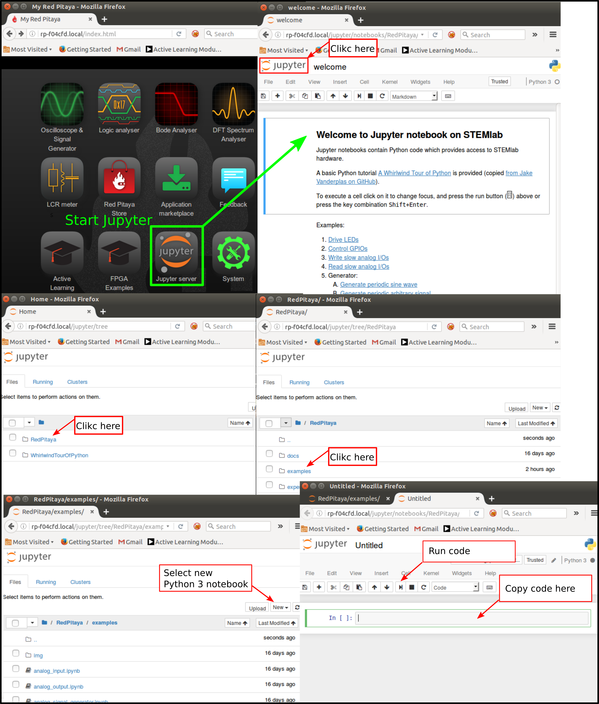

Der MOSFET als Diode#
Zielsetzung#
Ziel dieses Versuches ist die Untersuchung der Strom- und Spannungscharakteristik von n-Kanal und p-Kanal MOS Feldeffekttransistoren (kurz nMOS und pMOS), die jeweils als Diode geschaltet sind.
Notice. Die STEMlab-Ausgänge können Spannungssignale mit einem maximalen Ausgangsbereich von \(\pm\) 1 V (2 Vpp) erzeugen. Für diesen Versuch werden höhere Signalamplituden benötigt. Aus diesem Grund wird wieder ein OP27 als invertierenden Verstärker benötigt, um die Signalverstärkung von OUT1 und OUT2 für einen Spannungshub von +4,7V bis -3,2V zu erreichen. Ein OP27 wird vom STEMlab über die +5 V und -3.3 V Spannungsschienen versorgt. Der Verstärkungfaktor des invertierenden Verstärkers wird auf \(\approx\) 5 gesetzt, wobei \(R_1\) = 2,2 k \(\Omega\) und \(R_2\) = 10 k \(\Omega\) eingesetzt werden.
Materialien#
Red Pitaya STEMlab
OP27 Operationsverstärker
1 \(k\Omega\) Widerstand
BS170 Kleinsignal-nMOS-Transistor
BS250 Kleinsignal-pMOS-Transistor
Platine
nMOS als Diode#
Die Schaltung des nMOS in Diodenkonfiguration ist in Figure gezeigt. In Diodenkonfiguration arbeitet ein nMOS vergleichbar zu einem npn-Transistor.
Die Schwellspannung (Threshold Voltage, \(V_{Tn,p}\), \(V_{th}\), \(V_{TH}\)) liegt nicht zwingend bei \(\approx\) 0,7 V wie bei einem Bipolartransistor. Bei einem unipolaren Transistor hängt sie von der Technologie und der Kanalgröße des Transistors ab. Für den ausgewählten nMOS-Transistor liegt die Schwellenspannung \(V_{Tn}\) bei etwa 2,0 V nominal. Das bedeutet, wenn die vom Gate-Kontakt zum Source-Kontakt anliegende Spannung (\(V_{GS}\)) die Schwellspannung \(V_{Tn}\) überschreiten, schaltet der nMOS Transistor ein und beginnt zu leiten. Da bei der Diodenkonfiguration des nMOS sein Drain-Kontakt schalttechnisch mit seinem Gate-Kontakt verbunden ist, ist die Drain-Source-Spannung gleich der Gate-Source-Spannung.
Hint. Diese Konfiguration des nMOS erzeugt effektiv eine Diode mit einer Durchlaßspannung, die der Schwellenspannung \(V_{Tn}\) entspricht.
Auf dem Steckbrett die Schaltung aus Figure aufbauen und mit den Messungen fortfahren.
Verfahren#
Für Sie ist die Schaltung aus Figure auf einer Platine aufgebaut; \(R_1\) = 2,2 k \(\Omega\), \(R_2\) = 10 k \(\Omega\) und \(R_3\) = 1 k \(\Omega\), Transistor M1 ist der nMOS Transistor vom Typ BS170.

Warning. Bevor Sie die Schaltung an die STEMlab-Pins -3,3 V und +3,3 V anschließen, überprüfen Sie Ihre Schaltung nochmal. Die Spannungsversorgungsstifte -3,3 V und +3,3 V haben keine Schutzschaltung und können im Falle eines Kurzschlusses beschädigt werden.
Starten Sie die Oszilloskop und Signalgenerator-App
Stellen Sie im Menü OUT1-Einstellungen den Amplitudenwert auf 0,45 V, den DC-Offset auf -0,45 V und die Frequenz auf 1 kHz ein, um die Eingangsspannung anzulegen. Wählen Sie im Wellenform-Menü TRIANGLE, deaktivieren Sie SHOW und wählen Sie ENABLE.
Stellen Sie sicher, dass IN1, IN2 und MATH V/div auf der linken unteren Seite des Bildschirms auf 1 V/div eingestellt sind (Sie können V/div einstellen, indem Sie den gewünschten Kanal auswählen und mit dem vertikalen +/- Regler einstellen).
Setzen Sie t/div Wert auf 200 us/div (Sie können t/div mit dem horizontalen +/- Reglern einstellen).
Stellen Sie unter MATH-Kanaleinstellungen IN1-IN2 ein und wählen Sie ENABLE.
Stellen Sie unter den Menueinstellungen IN1 und IN2 den Messtaster auf x10 und den vertikalen Offset auf 0.
Stellen Sie unter Einstellungen des MATH-Menüs den vertikalen Offset auf 0 ein.
Stellen Sie unter TRIGGER-Einstellungen den Triggerpegel auf 1 V ein
IV-Kurvenmessungen#
Da sich ein nMOS wie eine Diode mit einer Durchlaßspannung entsprechend der \(V_{Tn}\) verhalten kann (Konfiguration in Figure), können sie die IV-Charakteristik wie bei der Diodenschaltung messen. Sie können die Oszilloskop-App, ein Jupyter Notebook oder ein SCPI-Skript verwenden.
Wie Sie Jupyter Notebook starten und ein neues Projekt erstellen, ist in Figure dargestellt.
k

Wenn Sie erfolgreich ein neues Jupyter Notebook erstellt haben, kopieren Sie den untenstehenden Code und führen Sie ihn aus.
Der unten stehende Code erzeugt das gleiche Signal wie in Figure, aber er plotet dieses in einem XY-Diagramm.
Für die Messung der IV-Kurve ist ein XY-Plot erforderlich, wobei die x-Achse die Diodenspannung \(IN_2\) und die y-Achse den Diodenstrom (Drainstrom) ) \(I_D = (IN_1 - IN_2)/R_3\) darstellen.
Kopieren Sie den unten stehenden Code in Zelle 1:
Erstelle eine neue Zelle (Einfügen -> Zelle darunter) und kopieren Sie den unten stehenden Code.
Führen Sie Zelle 1 und Zelle 2 aus. Hinweis Zelle 2 ist eine Hauptschleife für die Erfassung und Neuaufnahme. Wenn Sie die Erfassung stoppen, führen Sie einfach nur Zelle 2 aus, um die Messungen erneut zu starten.
Nach dem Ausführen der Jupyter Notebook Zelle sollten Sie die IV-Charakteristik der Diode erhalten, wie in Figure dargestellt.
pMOS als Diode#
Die selben Messungen können auch mit einem pMOS-Transistor durchgeführt werden. Beim pMOS-Transistor wird allerdings die Polarität der Spannung umgekehrt, so dass die Konfiguration der pMOS-Diode anders sein muss als bei einem nMOS. Die Konfiguration der pMOS-Diode ist in Figure dargestellt.
Verfahren#
Für Sie ist die Schaltung aus Figure auf einer Platine aufgebaut; \(R_1\) = 2,2 k \(\Omega\), \(R_2\) = 10 k \(\Omega\) und für \(R_3\) = 1 k \(\Omega\), der Transistor M1 ist ein pMOS Transistor vom Typ BS250.
Warning. Bevor Sie die Schaltung an die STEMlab-Pins -3,3V und +3,3V anschließen, überprüfen Sie Ihre Schaltung nochmal. Die Spannungsversorgungsstifte -3,3V und +3,3V haben keine Schutzschaltung und können im Falle eines Kurzschlusses beschädigt werden.
Starten Sie die Anwendung Oszilloskop und Signalgenerator-App
Stellen Sie im Menü OUT1-Einstellungen den Amplitudenwert auf 0,45 V, den DC-Offset auf -0,45 V und die Frequenz auf 1 kHz ein, um die Eingangsspannung anzulegen. Wählen Sie im Wellenform-Menü TRIANGLE, deaktivieren Sie SHOW und wählen Sie ENABLE.
Stellen Sie sicher, dass IN1 und IN2 auf der linken unteren Seite des Bildschirms auf 1 V/div eingestellt sind (V/div kann im gewünschten Kanal mit den vertikalen +/- Butten einstellt werden) und MATH auf 0.5 V/div.
Setzen Sie t/div Wert auf 200 us/div (t/div wird mit den horizontalen +/- Button eingestellt).
Stellen Sie unter MATH-Kanaleinstellungen die Differenz IN1-IN2 ein und wählen Sie ENABLE.
Stellen Sie unter den Menueinstellungen IN1 und IN2 den Messtaster auf x10 und den vertikalen Offset auf 0.
Stellen Sie unter Einstellungen des MATH-Menüs den vertikalen Offset auf 0 ein.
Stellen Sie unter TRIGGER-Einstellungen den Triggerlevel auf 4 V ein.
Wie in Figure zu sehen, verhält sich der pMOS in der Diodenkonfiguration wie eine Diode mit einer Durchlaßspannung gleich der pMOS Schwellenspannung \(V_{Tp}\).
Vergleichen Sie Figure mit Figure und versuchen Sie, den Unterschied zwischen nMOS- und pMOS-Diodenkonfigurationen zu erklären.